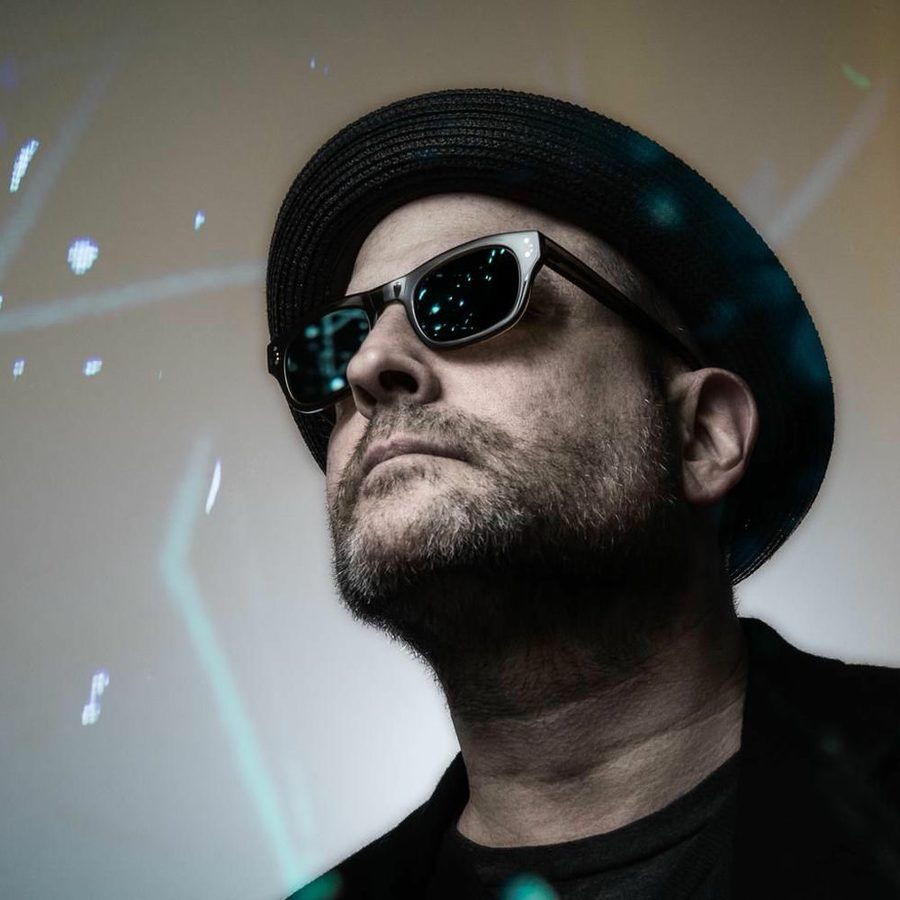

Blue Six: “Record labels seem a bit anachronistic in the ‘post-records’ world”


With NYC veteran Jay Denes AKA Blue Six dropping his fourth studio album ‘Signs & Wonders’, his Naked Music Recordings label is climbing towards its 20th anniversary of when it began releasing deep, soulful house records. There’s been a lot of labels that have come and gone in that time, though ‘Signs & Wonders’ is evidence Blue Six still has something to say. While there’s debate as to the ongoing relevance of the album format (something that Denes himself acknowledges), ‘Signs & Wonders’ has nonetheless emerged from the old-school style of love and care that’s associated with producing an album.
At this point, it’s a labor of love. I intend to keep making records until I get it right, which will hopefully be before I’m gone. It’s nice having the brand, and a following to work from. People know I don’t just put stuff out, to put it out. As long as it’s doable, I’ll do it!..There’s a beautiful, polished edge to its smooth sounds, and some heavy themes tackled by Denes; personal loss and grief, as well as the cerebral notion of what her terms as the “intersection of the spiritual, symbolic, and ordinary.” That’s not to mention the incredible vocals courtesy of his longtime collaborators, Catherine Russell, Aya and Tabitha Fair. In this era of autotuned vocals, ‘Signs & Wonders’ is brimming to overflowing with genuine soul.
I Voice talks with Blue Six to find out more about what went into creating the album.
Hi Jay, hope you’re well. What have been the major developments for you this year?
The year has been transformative for me on a personal level, but then most years feel that way when you’re living them, at least for me. As for the label, well for some years now Dave and I have kept Naked to put out our own records at our own pace. We keep the catalog available, and add new stuff as we finish it. Record labels, in the ‘post-records’ world seem a bit anachronistic, unless you’re interested in signing people and essentially owning at least half of their careers. Today’s common ‘all in’ deals don’t interest me. I don’t want to own anyone’s career and I don’t want to be owned – and that only really works for music with larger ‘pop’ ambitions, where fame is the real goal.
We’re talking about your just-released 'Signs & Wonders' album. There’s a lot of love and care that has gone into this one, how long has it been in the works for?
I can honestly say that every album I’ve produced and wrote, I’ve been one hundred percent committed to while I was working on it. I’m always mentally and emotionally drained after I finish one, this one is no different. If anything, it took longer because I only worked on it when I felt I could work well, and concentrate. The last few years had a lot of personal ups and downs for me, and so if I could focus I worked if not I didn’t. I also spent a great deal of time improving my skills in photography and Photoshop. I’ve done photography since I was a kid, I studied it, at some point I thought it would be my career. I do it professionally part time now, it’s my art therapy, keeps me sane! The new album is the first one that has my work all over it.
There’s definitely a focus on the classic soulful, smooth and groovy sounds here. What sort of musical focus did you set out with, and did it change as you were creating it?
I’ve always been a ‘go with the flow’ type. I think about music all the time, even when I’m not working on it. Usually when I go into write I have something on my mind, sometimes it’s specific, while sometimes it’s just a vague feeling. I actually think of this record as particularly moody with a number of the tunes having a somewhat darker, unearthly feel. It was that kind of few years!
I’ve gotten very used to working with singers that can work on a high level – take direction, and have perfect intonation. I think this is an area that has suffered greatly in modern times – thanks to autotune there’s a glut of mediocre vocalists out there...There’s also obviously a strong focus on vocals with the album, and you’re working very closely with several vocalists. How did the working relationships develop?
I’ve been very close with Catherine Russell and Aya for many years, and they’re both on most of my records. I also produced and co-wrote Aya’s ‘Strange Flower’ record for Naked some years ago. Tabitha Fair has been on the last three albums I’ve made, I think of them as three shades of brightness; generally, depending on the character of tune, one will fit. Like my own personal Greek chorus. And I’m somewhat spoiled by how top notch they are. I’ve gotten very used to working with singers that can work on a high level – take direction, and have perfect intonation. I think this is an area that has suffered greatly in modern times – thanks to autotune there’s a glut of mediocre vocalists out there. I have no interest in contributing to it!
Catherine is one of the most famous and skilled jazz singers alive, I’ve watched her go from playing small clubs to selling out Lincoln Center. She’s an amazing person, and a joy to work with. I feel proud to have had her on my records. People that only know her from Jazz are usually surprised when they realize it’s her on my stuff. Aya is an old friend, she’s been through the major label mill (as have I) a number of times, and through it all we always managed to get stuff done. She’s worked on a bunch of other related stuff, Sweetback, Lenny Kravitz, etc. She’s super into yoga music these days. Tabitha was a very successful studio session and live singer in Nashville before she moved to NYC, she just has the most beautiful pure voice. She’s on a whole bunch of country and Christian records too!
You’ve talked about ‘Signs & Wonders’ being about, “the intersection of the spiritual, symbolic, and ordinary world. That, and the stuff of life.” That’s a big thematic concept.
I’ve always considered myself first and foremost a writer. I’m trying not to make throwaway records. Only time will tell if I’ve succeeded at all. On every album I’ve made there’s usually a lyrical theme running through it. Usually that’s whatever I’m wrestling with at the time. For the past few years, that’s been mortality, what it means to be human, what it means to be incarnate as solid matter, what it means to be floating on a planet in a seemingly endless universe. And of course, how humanity can somehow take all that, ignore it, and turn everyday reality into a minor hell of consumerist bullshit.
You’ve also talked about other personal inspirations on the album; “…the deaths of a close friend and my father in rapid succession I wanted to write about feeling numb”.
Well, they certainly slowed me down! I really believe the relationships in your life are the fabric of your life. So when you pull out a thread, it’s destabilizing, and scary. I was a zombie for a while there. I really just didn’t want to feel anything. I understood the real appeal of opiates for the first time.
In hindsight, how was the transition when your Naked Music label entered the digital era?
I cannot tell you how many ridiculous conversations I’ve had about this subject! The willingness of people to pretend that somehow the music biz will transform and come out okay despite having one of its main financial legs removed is ludicrous! The business now functions fine for the top one percent of artists. Where recorded music is facet of a larger popular career. But the professional middle – which is where nearly all the music I’ve loved came from – has been eroded to near non-existence. Any electronically reproducible intellectual property has suffered the same fate. All my photographer friends are in the same boat as well, and for the same reasons. The only creative class that has managed to immunize themselves against copyright loss is pay television like HBO; they have huge subscriber bases and cash flow. Hence, the best things modern culture is making are coming from cable TV. It’s a golden age there.
You also talk about your past venture with Virgin/EMI as being a “difficult marriage”.
Our experience with a major was pretty typical. The short story is always the same: we were “hot” for a minute, and had a few majors pursuing us. We signed and before the ink was dry, the guy who signed us was fired. Then we were largely ignored, then we left… We were lucky (and Dave is smart) and got away relatively unscathed.
And finally, what’s coming up next year for Blue Six and Naked Music NYC?
I’m thinking in the new all digital economy that albums may be a thing of the past. I’m probably gonna try and make EPs and singles, and release them a little more frequently. And I’m gonna direct some videos for us and see how that goes. Hopefully that’ll keep people from thinking I died in the interim…